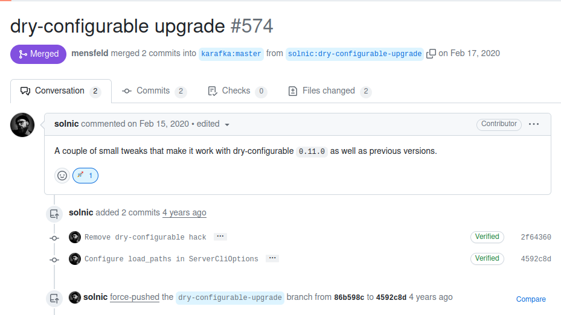
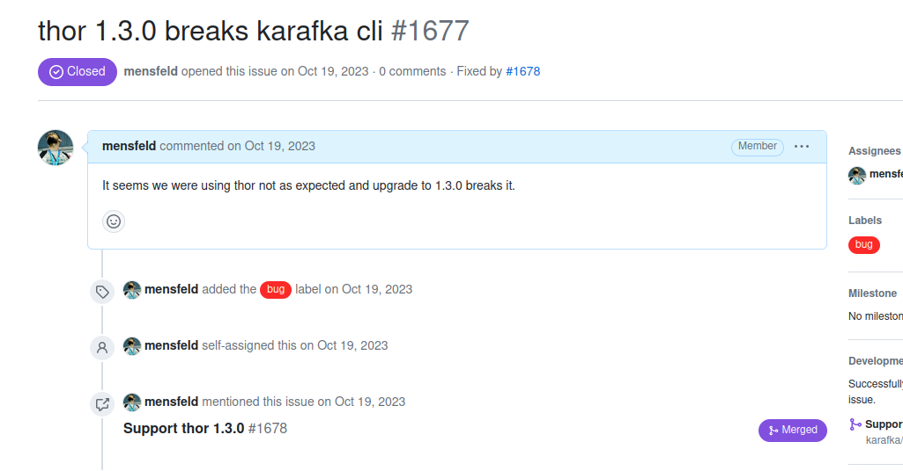

Future-Proofing Ruby Gems
Strategies for Long-Term Maintenance
The point of this talk is not for me to reach the end of of it.
The point is for me to teach you something.
So if I lose you at any point, interrupt me immediately.
I love questions.
$ whoami
Maciej Mensfeld
- I work @ Mend.io
- I do and analyze OSS
What do I hope to leave you with
- OSS is fun!
- Maintaining gems is doable
- OSS connects
- Innovation does not contradict maintainability

Agenda
- Introduction & OSS Development Trends
- Ruby Gems Development Dynamics
- Advanced Considerations
- Forward-Thinking Practices & Legal Aspects
Every good work of software starts by scratching a developer's personal itch.Eric Raymond, The Cathedral and the Bazaar
- I am not different
- First gem 13 years ago (2011)
- Bad ideas require bad solutions
- Had no plans to make anything popular
- Karafka first release: Mid 2015
- Created out of laziness
- Simple at first
- Started to grow
- Became somewhat popular
- Modern applications are expected to do more.
- You need to think big and smart.
The same applies to Ruby Gems and other libraries.
Karafka
Sidekiq
*tests not included, just code and comments
Zeitwerk
*tests not included, just code and comments
Avo
*tests not included, just code and comments
SolidQueue
*tests not included, just code and comments
Ruby Gems Development Dynamics

Ruby Gems Development Dynamics
- Rails Influence & Integration
- Dependency Management & Self-Reliance
- Architectural Foundations for Longevity

Rails Dominance in the Ruby OSS Scene
- Ease of Integration
- Tools Versatility
- Community Support
- Market Reach
- Easier UI Creation
Rails Dominance in the Ruby OSS Scene
- Version Dependency
- Limited Scope
- Multi-Version Complexity
Cooperate with Rails
Operate Beyond
Operating Beyond
- Railtie + Auto Detection
- Auto-configuration (plug-and-play)
- Concepts Remapping
::Karafka::EVENTS.each do |event_name|
::Karafka.monitor.subscribe(event_name) do |event|
# Align with ActiveSupport::Notifications naming convention
event = (event_name.split('.').reverse << 'karafka').join('.')
# Instrument via ActiveSupport
::ActiveSupport::Notifications.instrument(
event_name,
**event.payload
)
end
end
ActiveSupport::Notifications.subscribe(
'consumed.consumer.karafka'
) do |event|
Rails.logger.info "[consumer.consumed]: #{event.inspect}"
end

Dependency Management & Self-Reliancee
Dependency is a liability
Your gem dependency is a multi-level liability
- concurrent-ruby
- dry-configurable
- dry-inflector
- dry-monitor
- dry-validation
- dry-events
- dry-initializer
- dry-schema
- dry-core
- envlogic
- ruby-kafka
- thor
- ...



83% Reduction
- zeitwerk
- concurrent-ruby
- thor
- rake
- ffi


- Fix it
- Ditch it
- Ignore it
Minimize your supply chain fingerprint.
- thor => 3622 LOC
- homebrew limited use-case => 109 LOC
- 96.9% less LOC
- dry-validation + deps => 21053 LOC
- homebrew limited use-case => 132 LOC
- 99.4% less LOC
Architectural Foundations for Longevity
- YOLO until validated
- Design with the Future in Mind
- Balance Innovation with Maintainability
Design with the Future in Mind
- Layered Architecture
- Component-Based Architecture
Layered Architecture
Layered Architecture
Component-Based Architecture
setting :processing do
setting :jobs_queue_class, default: Processing::JobsQueue
setting :scheduler_class, default: Processing::Schedulers::Default
setting :jobs_builder, default: Processing::JobsBuilder.new
setting :coordinator_class, default: Processing::Coordinator
setting :partitioner_class, default: Processing::Partitioner
setting :strategy_selector, default: Processing::StrategySelector.new
setting :expansions_selector, default: Processing::ExpansionsSelector.new
setting :executor_class, default: Processing::Executor
end
Component-Based Architecture
icfg.processing.coordinator_class = Pro::Processing::Coordinator
icfg.processing.partitioner_class = Pro::Processing::Partitioner
icfg.processing.scheduler_class = Pro::Processing::Schedulers::Default
icfg.processing.jobs_queue_class = Pro::Processing::JobsQueue
icfg.processing.executor_class = Pro::Processing::Executor
icfg.processing.jobs_builder = Pro::Processing::JobsBuilder.new
icfg.processing.strategy_selector = Pro::Processing::StrategySelector.new
icfg.processing.expansions_selector = Pro::Processing::ExpansionsSelector.new
Design with the Future in Mind
- Understand Release Cycles and User Adoption
- Strategic Release Planning
- Backward Compatibility and Predictability
- Iterative Feature Development
- Method Visibility and Public APIs Design
- Documentation and Examples
Gems are not the final product
- Gems are not applications
- Adoption lags significantly (1-2 years)
- Ruby version support can be critical
Strategic Release Planning
- Developers are lazy
- Release is a friction
Backward Compatibility and Predictability
- Never break APIs without clear reason
- Never break APIs without direct indication
Iterative Feature Development
- First iteration of a feature is almost never perfect
- Design for extendability
def dead_letter_queue(
max_retries: 3,
topic: nil
)
@dead_letter_queue ||= Config.new(
active: !topic.nil?,
max_retries: max_retries,
topic: topic
)
end
def dead_letter_queue(
max_retries: 3,
topic: nil,
independent: false,
transactional: true
)
@dead_letter_queue ||= Config.new(
active: !topic.nil?,
max_retries: max_retries,
topic: topic,
independent: independent,
transactional: transactional
)
end
Method Visibility and Public APIs Design
- Your APIs != User APIs
- Public vs. Private vs. Protected won't work
Hanami
# @api public
# @since 2.0.0
def app_name
slice_name
end
# @return [Hanami::SliceName]
#
# @api private
# @since 2.0.0
attr_reader :app_name
Rails
def _protected_ivars
PROTECTED_IVARS
end
private :_protected_ivars
def _extract_redirect_to_status(options, response_options)
if options.is_a?(Hash) && options.key?(:status)
Rack::Utils.status_code(options.delete(:status))
elsif response_options.key?(:status)
Rack::Utils.status_code(response_options[:status])
else
302
end
end
Karafka
- Too lazy for so many annotations
- I do not like the underscore - makes me think
Karafka
Solid Docs (lol)
Not documented?
Not part of the user API.
Documentation and Examples
- Usable
- Credible
- Findable
- Useful
- Valuable
- Accessible
- Desirable
Addy Osmani / https://read-dx.addy.ie/chapter-good-dx
Advanced Considerations
UI/UX & Internal Structures
| Gem | Framework |
|---|---|
| Sidekiq | Custom |
| ActiveAdmin | Rails |
| Resque | Sinatra |
| Karafka | Roda |
| MailCatcher | Sinatra |
| Blazer | Rails |
| Ahoy (ahoy_matey) | Rails |
Maintaining data on the user side is tough
- Resets
- Tampering
- Migration Jumps
- Not Reading Any Docs
- Not Reading Upgrade Guides
Schema Is The King
{
"schema_version": "1.2.2",
"type": "consumer",
"dispatched_at": 2690883271.5755131,
"process": {
"started_at": 2690818651.8229299,
"name": "shinra:1:1",
"status": "running",
"listeners": {
"active": 2,
"standby": 0
}
}
Seamless Migrations With Zeitwerk
class Inflector < Zeitwerk::GemInflector
MIGRATION_ABSPATH_REGEXP = /migrations\/[0-9]+_(.*)/
MIGRATION_BASENAME_REGEXP = /\A[0-9]+_(.*)/
def camelize(basename, abspath)
return super unless abspath.match?(MIGRATION_ABSPATH_REGEXP)
return super unless basename.match?(MIGRATION_BASENAME_REGEXP)
super(
basename.match(MIGRATION_BASENAME_REGEXP).to_a.last,
abspath
)
end
end
loader.inflector = Inflector.new("#{root}/karafka/web.rb")
Seamless Migrations With Zeitwerk
# migrations/1700234522_introduce_waiting_in_consumers_metrics.rb
class IntroduceWaitingInConsumersMetrics < Base
self.versions_until = '1.1.1'
self.type = :consumers_metrics
def migrate(state)
state[:aggregated].each_value do |metrics|
metrics.each do |metric|
metric.last[:waiting] = 0
end
end
end
end
Zero-Downtime Deployment
- Multiple Schemas
- Multiple Gem Versions
- Multiple Ruby Versions
- Multiple Rails Versions
Testing Strategies for Robustness
- Unit Testing
- End-To-End Integration Testing
- Multiple Ruby and Rails Versions Compatibility
- EOL Testing
Tests can be a great form of documentation
class Consumer < Karafka::BaseConsumer
def consume
messages.each do |message|
DT[0] << message.raw_payload
end
end
end
elements = DT.uuids(100)
produce_many(DT.topic, elements)
Karafka::Server.run
assert_equal elements, DT[0]
Multiple Ruby and Rails Versions Compatibility
| Rails / Ruby | Ruby 2.7 | Ruby 3.0 | Ruby 3.1 | Ruby 3.2 | Ruby 3.3 |
|---|---|---|---|---|---|
| Rails 6.0 | 6.0 - 2.7 | 6.0 - 3.0 | 6.0 - 3.1 | 6.0 - 3.2 | 6.0 - 3.3 |
| Rails 6.1 | 6.1 - 2.7 | 6.1 - 3.0 | 6.1 - 3.1 | 6.1 - 3.2 | 6.1 - 3.3 |
| Rails 7.0 | 7.0 - 2.7 | 7.0 - 3.0 | 7.0 - 3.1 | 7.0 - 3.2 | 7.0 - 3.3 |
| Rails 7.1 | 7.1 - 2.7 | 7.1 - 3.0 | 7.1 - 3.1 | 7.1 - 3.2 | 7.1 - 3.3 |
Summary
- OSS is fun!
- Maintaining gems is doable
- OSS connects
- Innovation does not contradict maintainability
Thank you
For more details, find me on Twitter:
- @maciejmensfeld
‚≠ê github.com/karafka/karafka üôè
Extras
Telemetry, Security, & User Feedback
- Consent-Based Telemetry in OSS
- Legal Implications of Data Extraction
- Security Risks of Telemetry
- Complexity in Commercial Agreements
- GDPR Considerations for Gem Authors
- User Feedback as a Non-Invasive Alternative
Forward-Thinking Practices & Legal Aspects
- Licensing & Relicencing
- Contributor License Agreement
License can be a problem
- You can always relicense your code
- You may not be able to relicense contributions